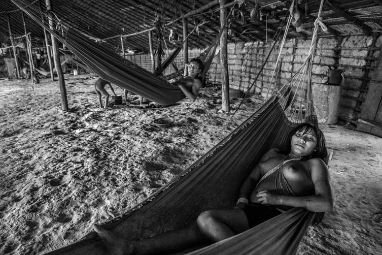

"#942" — Comunidade de Piaú, Território Indígena Yanomami, Estado do Amazonas, Brasil, 2019
Amazônia, 2022 · Foto Digital · #942 ERC-721
Os Yanomami são o maior grupo étnico indígena de baixo contato do mundo. Eles possuem uma população de cerca de 40.000 pessoas, sendo 28.000 no Brasil e o restante na Venezuela. Vivem em cadeias de montanhas e vales no extremo norte do Brasil, no maior território indígena do país. A terra estende-se do norte do estado de Roraima até o Rio Negro, no estado do Amazonas.
O xamanismo é central na cultura Yanomami. Seu principal líder é o xamã Davi Kopenawa, pioneiro na campanha para estabelecer o Território Indígena Yanomami, iniciada no final da década de 1970. Em 1993, Haximu, uma comunidade Yanomami, sofreu um massacre cometido por garimpeiros ilegais. Isso levou à única condenação pelo crime de genocídio em toda a história da justiça brasileira. Os Yanomami incluem, pelo menos, um grupo isolado.
| Artista | Sebastião Salgado |
| Coleção | Amazônia — 2022 |
| Mídia | Foto Digital |
| Token | #942 ERC-721 (Ethereum) |
| Contrato | 0xf1f036ce…64fb80fc |
| Arquivo | Ver no Arweave |
| Procedência | Sotheby's (lançamento original) |